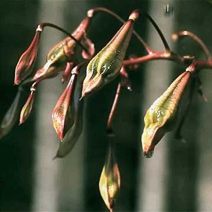
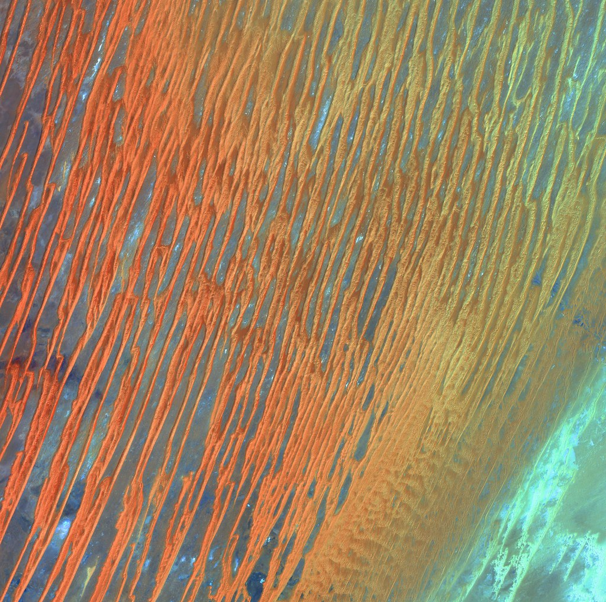
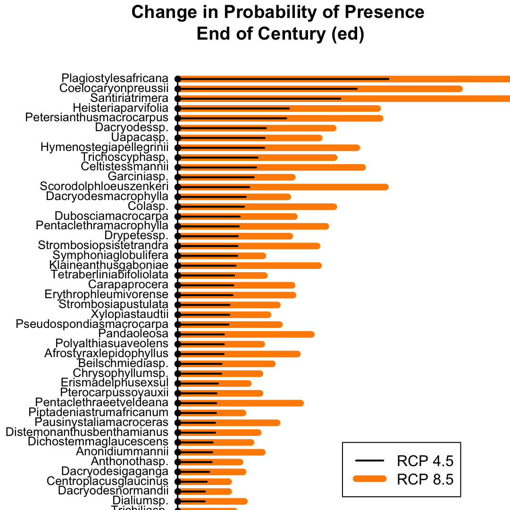
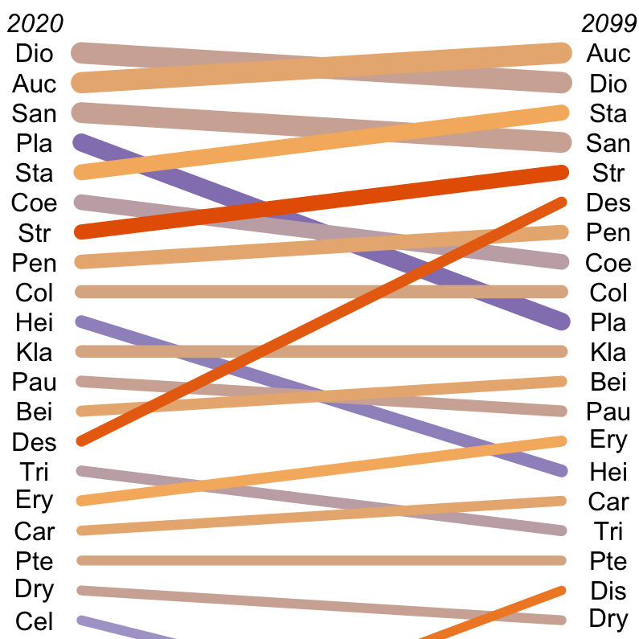

- 
R Paket: Mast Inference and Forecasting (MASTIF)
MASTIF schätzt probabilistisch die Samenproduktion und -ausbreitung von Bäumen anhand von Samenfallendaten und Baumstandorten. Das Modell baut auf der reichhaltigen Literatur von Saatgutausbreitungsmodellen auf, die ein bivariates Student's t (2Dt) verwenden, indem es Unsicherheiten in der Saatgutzuordnung berücksichtigt, den Reifestatus für unbekannte Bäume modelliert und die Raum-Zeit-Kovarianzstruktur der Saatgutproduktion zwischen Bäumen explizit beschreibt. Unsere Publikation, die das Modell und die Theorie dahinter beschreibt, finden Sie hier, und ergänzendes Material finden Sie hier.Installieren Sie hier , dann in R folgendes aufrufen:
install.packages('mastif_1.0.tar.gz',repos=NULL, type='source')
library('mastif')
Hilfe und Dokumentation hier:
help('mastif')
browseVignettes('mastif')
- 
Python Paket: geeDataExtract
Das Python-Paket geeDataExtract nutzt die Kommandozeile und die riesige Environmental Covariate-Datenbank von Google Earth Engine, um eine Vielzahl von Daten über Raum und Zeit abzurufen. Sie können dieses Paket mit dem folgenden Arbeitsablauf verwenden (Google Earth Engine Umweltkovariablen für Punkte ohne ArcGIS erhalten)Paket herunterladen hier.
Python Paket Zitat:
Schwantes, Amanda M., Núñez, Chase L. (2019). geeDataExtract. Python package version 0.0.1.
Arbeitsablauf: Google Earth Engine Umweltkovariablen für Punkte ohne ArcGIS erhalten
Google Earth Engine bietet eine enorme offene Ressource für Umweltwissenschaftler, erfordert aber ein wenig Kodierung und oft zumindest ein paar Stunden in (dem sehr teuren) ArcGIS. Hier ist ein Weg, Arc ganz zu überspringen, der Sie vom Start bis zum Download nur mit R, der Kommandozeile und einem Internet-Browser.R Paket: Generalized Joint Attribute Model (GJAM)
GJAM wurde entwickelt, um einige der Hauptherausforderungen für ökologische Prognosen mit Biodiversitätsdaten zu lösen. i) Die Daten sind multivariat, ii) sie werden auf verschiedenen Skalen beobachtet und iii) sie sind meist Nullen. Probabilistische Inferenz in GJAM lässt Daten mit disparaten Skalen und massiver Null-Inflation zu. Das heißt, die Daten werden oft auf unterschiedliche Art und Weise erhoben, und Beobachtungen von Arten sind ein seltenes Ereignis. Durch die Vermeidung der Verzerrung von Skalen, die in verallgemeinerten linearen Modellen implementiert ist, können GJAM-Schätzungen auf der Skala der Beobachtungen interpretiert werden, wobei der Stichprobenaufwand berücksichtigt wird. Eine Erläuterung der Modellstruktur finden Sie unter hier. Das Originalmanuskript finden Sie unter hier.installieren Sie es, indem Sie Folgendes in R aufrufen:
install.packages('gjam')
library('gjam')
Hilfe und Dokumentation hier:
help('gjam')
browseVignettes('gjam')
Arbeitsablauf: Passendes Modell der Darmpassagezeit des Wilden Elefanten und der Ausbreitungsdistanzen der Samen
Eine genaue Schätzung der Darmpassagezeit, von der Nahrungsaufnahme bis zur Defäkation, ist für das Verständnis von wirbeltiervermittelten ökologischen Prozessen, wie z. B. der Samenausbreitung, unerlässlich. Hier ist ein Arbeitsablauf, der ein Modell der Darmpassagezeit anpasst und es räumlich anwendet, um auf die Dichte der Samenausbreitung zu schließen.- 
Funktion: Arrow Plots
Zur Darstellung der geordneten Mittelwertdifferenz zwischen mehreren Gruppen. In diesem Beispiel stelle ich die Mittelwertdifferenz der Anwesenheitswahrscheinlichkeit für Baumarten im Land Gabun dar.{kind=link}
- 
{kind=link}